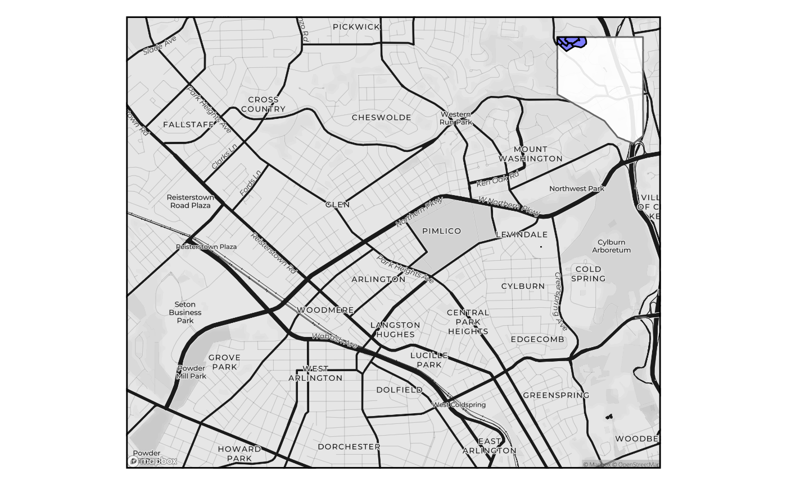
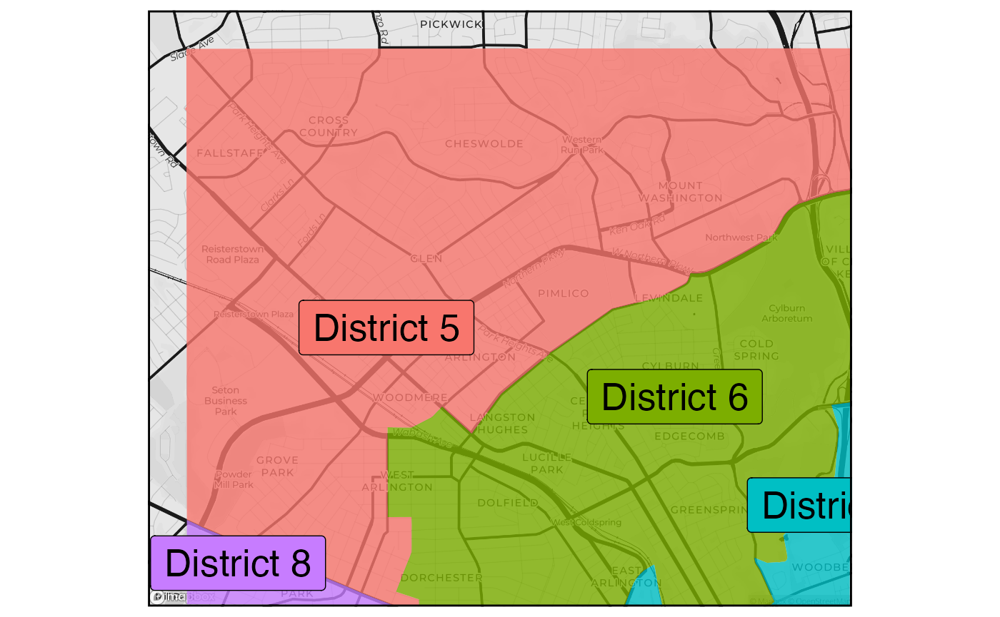
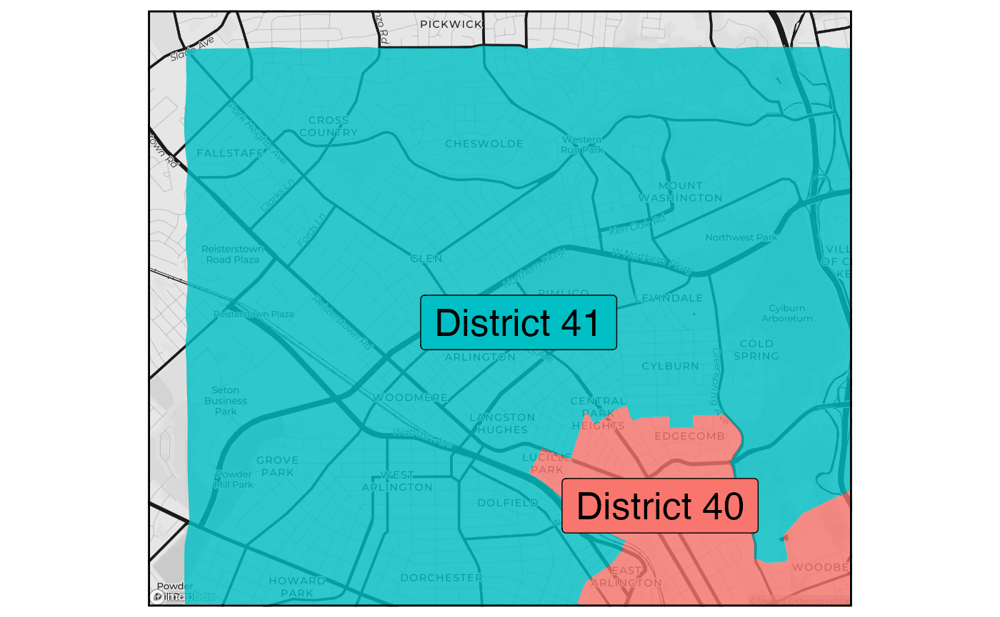

Boundaries and marked locations on maps
boundary_location_maps.RmdGetting started
# library(birdseyeview)
library(mapbaltimore)
library(ggplot2)
library(overedge)
library(birdseyeview)Set parameters
params <- list(
data = list(
type = "neighborhoods",
package = "mapbaltimore"
),
map = list(
bbox_dist = 300,
mapbox_crs = 3857,
context = "baltimore_city"
),
names = list(
area = c("Cheswolde", "Cross Country", "Fallstaff", "Glen", "Mount Washington"),
near = c("Pimlico Good Neighbors", "Arlington", "Central Park Heights"),
extra = c("Pikesville", "Owings Mills")
),
labels = list(
area = "Neighborhood coalition",
near = "CHAI project area",
other = "SNAP Planning Area"
),
page = list(
name = "letter",
orientation = "landscape",
margin = "none"
)
)Get locations
area <-
get_location(
type = params$data$type,
package = params$data$package,
name = params$names$area
)
near_area <-
get_location(
type = params$data$type,
package = params$data$package,
name = params$names$near
)
area_ext <-
get_location(
type = params$data$type,
package = params$data$package,
name = c(params$names$area, params$names$near),
union = TRUE,
label = params$labels$other
)
context <-
suppressWarnings(
get_location(
type = params$map$context,
package = params$data$package,
location = NULL
)
)
params$bbox <-
st_bbox_ext(
x = area_ext,
dist = params$map$bbox_dist
)
params$map$bbox_orientation <-
sf_bbox_asp(
bbox = params$bbox,
orientation = TRUE
)Paper set up
params$paper <-
get_paper(
paper = params$page$name,
orientation = params$map$bbox_orientation
)
params$margin <-
get_margin(
margin = params$page$margin,
paper = params$paper$name,
orientation = params$paper$orientation
)
params$map$block_asp <-
get_asp(
paper = params$paper$name,
orientation = params$paper$orientation,
margin = params$page$margin,
block_asp = TRUE
)
params$bbox_paper <-
st_bbox_ext(
x = params$bbox,
asp = params$map$block_asp
)Make a basemap
Mapbox
layer_snapbox <-
function(bbox,
map_style = snapbox::mapbox_gallery_moonlight(), # snapbox::mapbox_galley_pencil(),
scale_ratio = 1,
access_token = Sys.getenv("MAPBOX_SECRET_TOKEN"),
basemap = FALSE,
neatline = TRUE,
...) {
# Set appropriate CRS for Mapbox
crs_mapbox <- 3857
if (check_sf(bbox)) {
bbox <- sf::st_bbox(bbox)
}
bbox <- sf_bbox_transform(
bbox = bbox,
crs = crs_mapbox
)
if (basemap) {
snapbox_layer <- ggplot2::ggplot()
} else {
snapbox_layer <- NULL
}
# Get Mapbox map
snapbox_layer <-
list(
snapbox_layer,
snapbox::layer_mapbox(
area = bbox,
map_style = map_style,
scale_ratio = scale_ratio,
mapbox_api_access_token = access_token
)
)
if (neatline) {
snapbox_layer <-
list(
snapbox_layer,
overedge::layer_neatline(
data = bbox,
...
)
)
}
return(snapbox_layer)
}
layer_location_mapbox <-
layer_snapbox(
bbox = params$bbox,
scale = 0.7,
basemap = FALSE,
neatline = TRUE,
expand = TRUE
)
basemap_mapbox <-
ggplot() +
layer_location_mapboxStreets data
layer_msa_streets <-
# NOTE: This layer could be replicated using overedge along but is isn't essential
mapbaltimore::layer_area_streets(
area = sf_bbox_to_sf(params$bbox_paper),
color = "gray60",
msa = TRUE,
size = 0.25
)
#> Reading layer `baltimore_msa_streets' from data source
#> `/Users/elipousson/Library/Caches/mapbaltimore/baltimore_msa_streets.gpkg'
#> using driver `GPKG'
#> Simple feature collection with 792 features and 22 fields (with 7 geometries empty)
#> Geometry type: MULTILINESTRING
#> Dimension: XY
#> Bounding box: xmin: 413476.4 ymin: 180341.8 xmax: 433957.6 ymax: 198210.8
#> Projected CRS: NAD83(HARN) / Maryland
layer_location_streets <-
layer_location_data(
data = "streets",
package = params$data$package,
location = params$bbox_paper
)
basemap_alternate <-
ggplot() +
layer_location_data(
data = baltimore_msa_counties,
fill = "lightblue",
alpha = 0.2
) +
layer_msa_streets
basemap_mapbox +
layer_location_data(
data = area_ext,
fill = "yellow",
alpha = 0.25,
crs = params$map$mapbox_crs
) +
layer_show_location(
data = area,
size = 1,
color = "gray20",
linetype = "solid"
) +
layer_location_data(
data = area,
geom = "label",
mapping = aes(label = name),
size = 3,
color = "black"
)
#> Coordinate system already present. Adding new coordinate system, which will replace the existing one.
Common map types
Inset map
inset <-
ggplot() +
layer_show_context(
data = area,
fill = "blue",
alpha = 0.5,
context = context,
context_aes = list(
color = "gray40",
size = 0.1,
fill = "white",
alpha = 0.9
),
crs = 3857
)
make_inset_map(
map = basemap_mapbox,
inset = inset,
position = "topright",
nudge_y = -0.05
)
Overlapping boundaries
params$map$admin_boundaries <-
c("council_districts", "legislative_districts")
# Apply a negative buffer to avoid overlap with state legislative District 40
map_admin_boundaries <- function(type = NULL) {
admin_boundaries <-
get_location_data(
data = type,
package = params$data$package,
location = params$bbox,
crop = TRUE,
crs = 3857
)
basemap_mapbox +
layer_location_data(
data = admin_boundaries,
aes(fill = name),
color = NA,
alpha = 0.8
) +
layer_location_data(
data = admin_boundaries,
geom = "label",
location = params$bbox_paper,
aes(label = name, fill = name),
color = "black",
size = 7,
label.padding = unit(0.5, "lines"),
hjust = 0.5,
vjust = 0.5
) +
overedge::theme_legend(
position = "none"
)
}
purrr::map(
params$map$admin_boundaries,
~ map_admin_boundaries(.x)
)
#> Coordinate system already present. Adding new coordinate system, which will replace the existing one.
#> Coordinate system already present. Adding new coordinate system, which will replace the existing one.
#> [[1]]
#>
#> [[2]]